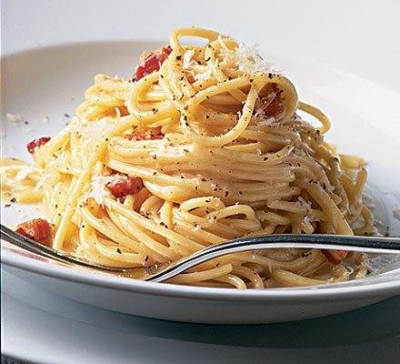

Classic Spaghetti Carbonara

Spaghetti Carbonara is a classic Italian pasta dish that is rich, creamy,
and satisfying. Made with eggs, cheese, pancetta, and pepper, it's a
simple yet delicious meal that can be whipped up quickly for a comforting
dinner.
Ingredients
- Spaghetti
- Pancetta or guanciale
- 2 large eggs
- 1 cup grated Parmesan cheese
- 1 cup grated Pecorino Romano cheese
- Freshly ground black pepper
- Salt
- Olive oil
- Garlic (optional)
Steps
- Cook the spaghetti in salted boiling water until al dente.
-
In a pan, cook the pancetta or guanciale in olive oil until crispy.
-
In a bowl, whisk together the eggs, Parmesan, Pecorino, and black
pepper.
-
Drain the pasta, reserving some pasta water, and add it to the pan with
pancetta.
-
Remove from heat, and quickly mix in the egg and cheese mixture,
stirring well to create a creamy sauce.
-
Add reserved pasta water if needed to reach the desired consistency.
- Serve immediately with extra cheese and pepper on top.